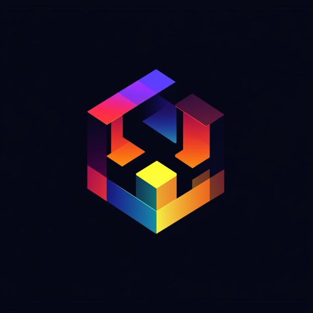

Siren Network
As the owner, I handle server configurations and custom content for our Minecraft community, focusing on engaging gameplay with custom builds and mechanics.
I am a passionate Software Developer with expertise in Java, CSS, and HTML. My journey in software development has spanned web and game projects, focusing on efficiency and functionality.
In addition, I manage Minecraft servers and develop custom plugins, creating unique player experiences worldwide.
As the owner, I handle server configurations and custom content for our Minecraft community, focusing on engaging gameplay with custom builds and mechanics.
Contributor to the WorldEdition toolset, enabling advanced Minecraft building functionalities for server admins and builders.
Custom plugin for Minecraft, allowing dynamic rank color assignments. Features include customizable colors, configuration ease, and compatibility with versions 1.8-1.20.

Building a portfolio website with HTML, CSS, and JavaScript to display my development projects and experiences.

HexaCloud, founded by Nas, is an innovative cloud platform designed to streamline data management and enhance collaboration. It leverages advanced algorithms to provide scalable storage solutions and efficient data processing. Users can expect a user-friendly interface and seamless integration with existing tools. Stay tuned for its upcoming launch, where HexaCloud aims to transform the way businesses handle their data.